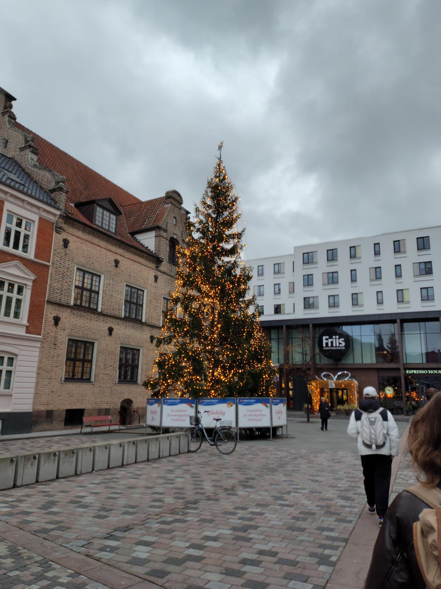

Juletræstænding
Oplev en af de første julebegivenheder live når hele byen samles ude hos Gabels torv til juletræstænding af byens største juletræ, en fast tradition der afholdes hvert år.

Se oversigten over årets begivenheder, og kom og vær med!
Oplev en af de første julebegivenheder live når hele byen samles ude hos Gabels torv til juletræstænding af byens største juletræ, en fast tradition der afholdes hvert år.
Når kalenderen viser december tilføjer Salling endnu et julehøjdepunkt: Det store juleshow.
For første gang nogensinde forvandles stormagasinerne til scener fyldt med musik, dans og
julestemning – et levende show for hele familien med sangere, musikere og dansere i Aalborg den
12.–14. december. Der opføres otte forestillinger.
Fredag d. 12. december kl. 14 og kl. 16
Lørdag d. 13. december kl. 12, kl. 14 og kl. 16
Søndag d. 14. december kl. 12, kl. 14 og kl. 16
– Julen i Salling har altid handlet om at samle mennesker og skabe magiske øjeblikke. I år har vi
foretaget vores største investering i julen nogensinde – det for at løfte oplevelsen endnu et
niveau.
Vi håber, at gæsterne vil tage imod de nye juleindslag med samme begejstring, som vi har haft i
arbejdet med dem, siger Marianne Bedsted.
Tilblivelsen af den nye juleudsmykning er blevet muliggjort med støtte fra Salling Fondene.
I vintermånederne forvandler C.W. Obels Plads sig til et sandt skøjtemekka, hvor store som små kan
slå
sig løs og prøve kræfter med den anlagte skøjtebane, som skaber vinterstemning i hjertet af Aalborg.
Åbningstider:
28 Nov/ 23 Dec:
Mandag - Fredag: 15:00 - 20:00
Lørdag & Søndag: 12:00 - 20:00
26 Dec / 30 Dec:
Mandag, Tirsdag & Fredag: 15:00 - 20:00
Lørdag & Søndag: 12:00 - 20:00
02 Jan / 22 Feb:
Mandag-Fredag: 15:00 - 20:00
Lørdag & Søndag: 12:00 - 20:00

Tag dine børn og/eller børnebørn med på julemarked og giv dem en ekstraordinær chance for at møde julemanden og få et billede med ham i Julemandens hus
Hop ombord på det hyggelige juletog på Gammeltorv og nyd en magisk tur gennem julemarkedets lys og
stemning.
Prisen pr. billet:
Voksne: 30 kr.
Børn: 25 kr.


Igen i år er der karrusel på julemarkedet som egner sig til både store og små.
Prisen pr billet: 30kr
Det ikoniske pariserhjul på Aalborg Julemarked lyser som et strålende vartegn, når mørket falder på.
De
glimtende lys spejler sig i byens julestemning, og hver tur løfter besøgende op over markedet med en
storslået udsigt over Aalborg Centrum
Prisen pr person: 35kr